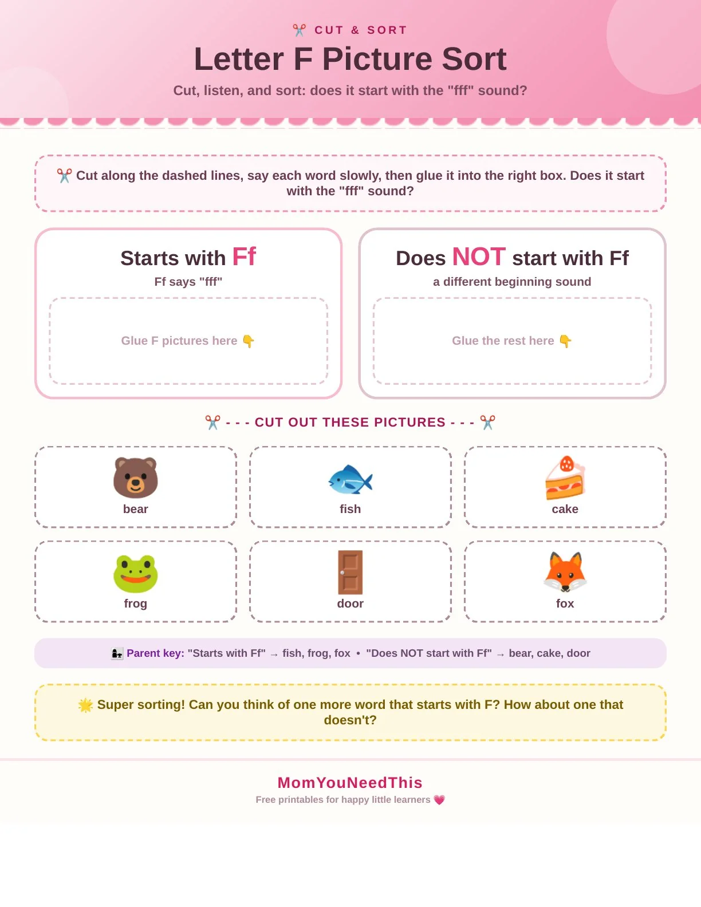

Letter F Picture Sort Sort Pictures By Their Beginning Sound
Sorting is a powerful early-learning skill! This printable has your child sort pictures into two groups: words that begin with the F sound and words that do not.
Quick Answer
A sorting game built around a single sound: the blowing /f/ in fish, frog and flower. Children cut out the picture cards and divide them into words that open with that blow and words that do not — a decision on every card, which is what makes sorting such strong listening practice. Designed for ages 2-5. Print at home with no signup needed.
At a Glance
- Ages: Toddlers and preschoolers (ages 2–5)
- Activity: Sorting picture cards by the blowing /f/ sound
- Skills: Beginning sounds and sorting
- Format: Printable worksheet (PDF)
- Cost: Free, no signup
🐟 Fish
🐸 Frog
🌸 Flower

🖼️ Cut, Sort & Glue
Cut out the picture cards together, then sort them into two piles: words that begin with the F sound and words that do not. Say each picture's name out loud before it lands — the ears do the sorting, not the eyes.
⬇️ Download Free Printable 🖨️ Print🎁 Free printable for toddlers & preschoolers
👂 Listen Carefully Together
Say each picture name slowly and listen for the first sound. Words like fish, frog and flower and flower all begin with the F sound. Stretch that first sound out — it makes the yes-or-no decision much easier for little ears.
✂️ Snipping Builds Skills Too
Cutting out the cards is great fine-motor practice — safety scissors, a little patience, and a grown-up nearby. If snipping is still hard, tear the cards apart instead, or have the cutting done beforehand so the sorting stays the star of the activity.
🎨 Keep Exploring Free Letter Activities
More alphabet learning activities are added regularly for toddlers and preschoolers.
🎁 View All Free Resources🧩 Sorting By The F Sound
Fish, frog and flower all open with a blow — top teeth on bottom lip, air streaming through. This sort is a blowing test: cards whose names start with that blow join the F pile, and everything else waits in the other pile, even pictures of things that live in water or hop.
F is the friendliest sound to check, because it can be stretched. A child who is unsure about a card can hold the first sound — ffff — and feel whether the teeth and lip are in the blowing position. If they are not, the card is not an f, whatever it depicts. That physical check makes this sort the most self-correcting of the set.
After the sort, the F pile reads like a little story: fish, frog, flower, fox, flag. Ask your child to arrange their winning cards into a sentence or a scene — the sound work is done, and a bit of storytelling locks the letter in memory.
🖨️ How to Use This Printable
Get started in minutes — everything here is free and made for busy parents.
- Download the printable. Tap the download button to save the free Free Letter F Picture Sort file to your device.
- Print it out. Use any home printer and regular paper — cardstock works great for pages little hands will use again and again. The print button opens the full-size page in a new tab if you prefer to print from there.
- Learn together. Sit with your child and say every picture's name out loud before it is sorted — hearing the first sound is the whole game. When in doubt, stretch the /f/ and listen. Short sessions work best.
- Explore more. Check the free printables linked below for your next activity.
❓ Free Letter F Picture Sort FAQs
Is this Free Letter F Picture Sort printable free?
Yes — every printable on MomYouNeedThis is 100% free to download and print. No signup, no payment, just tap the download button and print the F sort as often as your child wants to play it again — the cards can also be kept in an envelope for repeat rounds.
How do I use this letter f printable?
Print the page, cut out the cards together, and sort: say each picture's name, stretch its first sound, and place it in the “begins with F” pile or the other pile. Short, playful sessions work better than long lessons for little learners.
What literacy skills does this practice?
Beginning sounds, listening discrimination, and sorting — the thinking skill underneath early math as well as reading. This sort trains one decision in particular: does this word start with /f/, or not? The hardest cards are the near-misses, like its voiced twin v — same teeth and lip, with a buzz, and those are exactly where the learning happens.
🔗 More Free Printables You’ll Love
Pair this printable with more free learning activities from the MomYouNeedThis library.
- 🖼️ Free Letter B Picture SortFree printable letter b picture sort for little learners.
- 🔊 Free Letter F Sound MatchFree printable letter f sound match for little learners.
- 🔊 Free Lowercase Letter F Sound PracticeFree printable lowercase letter f sound practice for little learners.
- 🎨 Free Letter F Sound ColoringFree printable letter f sound coloring for little learners.